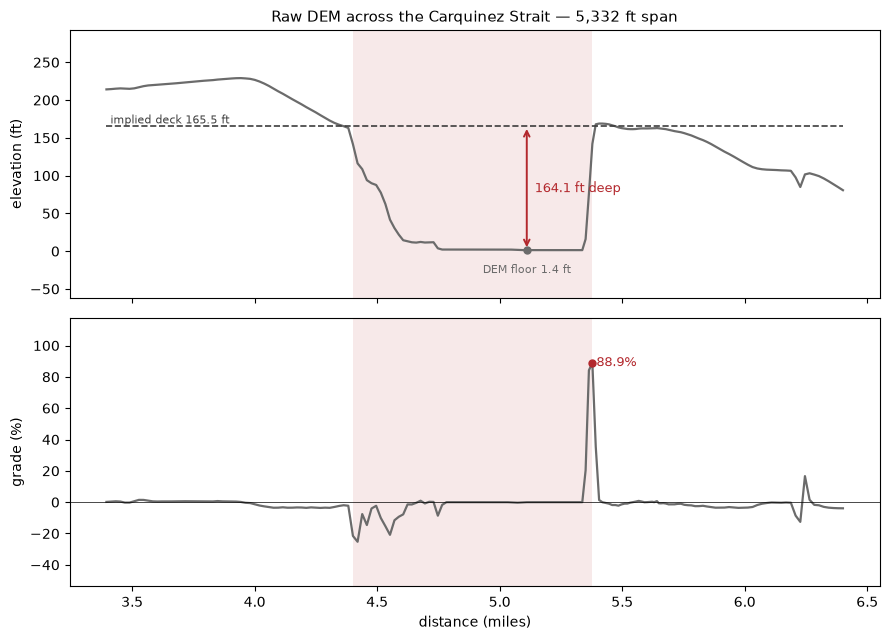
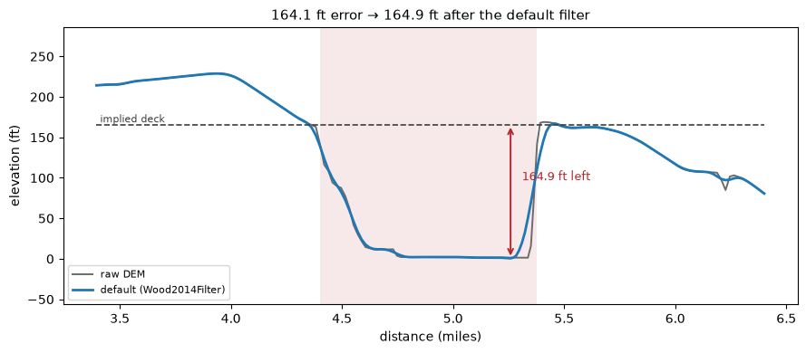
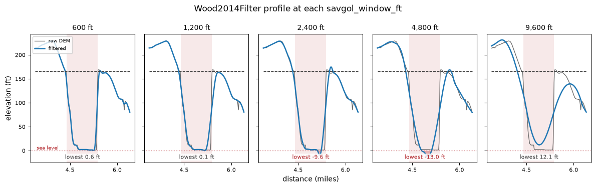
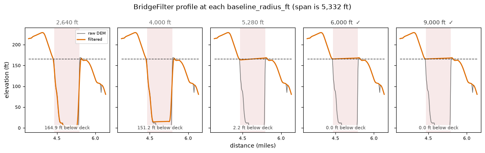
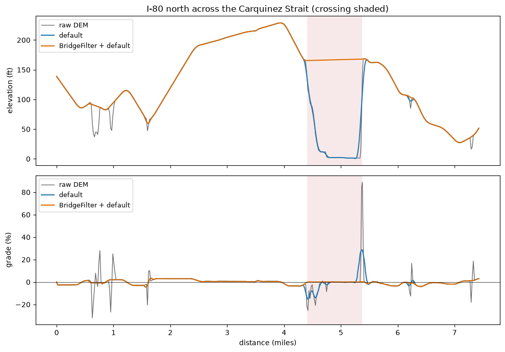

Bare-Earth Bridges#
While the default filter can capture typical road bridges it struggles with unusually long spans. To highlight this, let's look an an example of Alfred Zampa Memorial Bridge on I-80 over the Carquinez Strait.
import matplotlib.pyplot as plt
import numpy as np
from _data import TILE_DIR, load_coords
from gradeit import BridgeFilter, USGSLocal, Wood2014Filter, gradeit
trace = load_coords("carquinez")
elevation_model = USGSLocal(TILE_DIR)
# The artifact, as the (first, last) index of the bad run.
FIRST, LAST = 232, 296
# One palette for every figure on this page: raw DEM is the neutral
# reference, the two filter configurations carry the identity colors, and
# red is reserved for the artifact itself.
RAW = "#6b6b6b"
DEFAULT = "#1f77b4"
COMBINED = "#e06c00"
ARTIFACT = "#b3282d"
DECK = "#3d3d3d"
# Value labels sit on a scrap of the surface so a line never runs through them.
LABEL_BOX = {"facecolor": "white", "edgecolor": "none", "alpha": 0.85, "pad": 1.0}
Characterizing the artifact#
First, look at the raw profile with no filter:
raw = gradeit(trace, elevation_model=elevation_model, elevation_filter=None)
miles = np.cumsum(raw.distances_ft) / 5280
cumulative_ft = np.cumsum(raw.distances_ft)
# The elevation the road deck should have, from the clean neighbor points.
deck_ft = (raw.elevation_ft_unfiltered[FIRST - 1] + raw.elevation_ft_unfiltered[LAST + 1]) / 2
span_ft = raw.distances_ft[FIRST : LAST + 2].sum()
# Index slice around the crossing, padded by its own span on each side.
LO = int(np.searchsorted(cumulative_ft, cumulative_ft[FIRST] - span_ft))
HI = min(int(np.searchsorted(cumulative_ft, cumulative_ft[LAST] + span_ft)) + 1, len(trace))
x = miles[LO:HI]
def elevation_of(result):
"""The profile a result should be judged on: filtered if there is one, else raw."""
return (
result.elevation_ft_unfiltered
if result.elevation_ft_filtered is None
else (result.elevation_ft_filtered)
)
def residual_ft(result):
"""The distance the profile still sits below the implied deck."""
return abs(elevation_of(result)[FIRST : LAST + 1].min() - deck_ft)
fig, (ax_elev, ax_grade) = plt.subplots(2, 1, figsize=(9, 6.5), sharex=True)
floor_i = FIRST + int(np.argmin(raw.elevation_ft_unfiltered[FIRST : LAST + 1]))
floor = raw.elevation_ft_unfiltered[floor_i]
ax_elev.plot(x, raw.elevation_ft_unfiltered[LO:HI], color=RAW, lw=1.6)
ax_elev.axvspan(miles[FIRST], miles[LAST], color=ARTIFACT, alpha=0.10, lw=0)
ax_elev.hlines(deck_ft, x[0], x[-1], color=DECK, lw=1.2, ls="--")
ax_elev.text(
x[0], deck_ft, f" implied deck {deck_ft:.1f} ft", va="bottom", fontsize=8, color=DECK
)
ax_elev.annotate(
"",
xy=(miles[floor_i], floor),
xytext=(miles[floor_i], deck_ft),
arrowprops={"arrowstyle": "<->", "color": ARTIFACT, "lw": 1.4},
)
ax_elev.text(
miles[floor_i],
(deck_ft + floor) / 2,
f" {deck_ft - floor:.1f} ft deep",
va="center",
fontsize=9,
color=ARTIFACT,
)
ax_elev.plot(miles[floor_i], floor, "o", ms=5, color=RAW)
ax_elev.annotate(
f"DEM floor {floor:.1f} ft",
(miles[floor_i], floor),
textcoords="offset points",
xytext=(0, -10),
ha="center",
va="top",
fontsize=8,
color=RAW,
)
ax_elev.set_ylabel("elevation (ft)")
ax_elev.set_title(f"Raw DEM across the Carquinez Strait — {span_ft:,.0f} ft span", fontsize=11)
ax_elev.margins(y=0.28)
grade_pct = 100 * raw.grade_dec_unfiltered[LO:HI]
peak = int(np.argmax(np.abs(grade_pct)))
ax_grade.plot(x, grade_pct, color=RAW, lw=1.6)
ax_grade.axvspan(miles[FIRST], miles[LAST], color=ARTIFACT, alpha=0.10, lw=0)
ax_grade.axhline(0, color="k", lw=0.5)
ax_grade.plot(x[peak], grade_pct[peak], "o", ms=5, color=ARTIFACT)
ax_grade.annotate(
f" {abs(grade_pct[peak]):.1f}%",
(x[peak], grade_pct[peak]),
fontsize=9,
color=ARTIFACT,
va="center",
)
ax_grade.set_ylabel("grade (%)")
ax_grade.set_xlabel("distance (miles)")
ax_grade.margins(y=0.25)
fig.tight_layout()
plt.show()

A 164 ft drop into open water, recovered over a few hundred feet of road, produces 89% grade!
What the default filter does#
Wood2014Filter detects artifacts by filtration residual. It smooths the profile, then flags points that sit far from their own smoothed value.
default = gradeit(trace, elevation_model=elevation_model)
fig, ax = plt.subplots(figsize=(9, 4))
after = residual_ft(default)
before = deck_ft - raw.elevation_ft_unfiltered[FIRST : LAST + 1].min()
ax.plot(x, raw.elevation_ft_unfiltered[LO:HI], color=RAW, lw=1.4, label="raw DEM")
ax.plot(
x,
default.elevation_ft_filtered[LO:HI],
color=DEFAULT,
lw=2.0,
label="default (Wood2014Filter)",
)
ax.axvspan(miles[FIRST], miles[LAST], color=ARTIFACT, alpha=0.10, lw=0)
ax.hlines(deck_ft, x[0], x[-1], color=DECK, lw=1.2, ls="--")
ax.text(x[0], deck_ft, " implied deck", va="bottom", fontsize=8, color=DECK)
low_i = FIRST + int(np.argmin(default.elevation_ft_filtered[FIRST : LAST + 1]))
ax.annotate(
"",
xy=(miles[low_i], default.elevation_ft_filtered[low_i]),
xytext=(miles[low_i], deck_ft),
arrowprops={"arrowstyle": "<->", "color": ARTIFACT, "lw": 1.4},
)
ax.annotate(
f"{after:.1f} ft left",
(miles[low_i], (deck_ft + default.elevation_ft_filtered[low_i]) / 2),
textcoords="offset points",
xytext=(9, 9),
fontsize=9,
color=ARTIFACT,
)
ax.set_ylabel("elevation (ft)")
ax.set_xlabel("distance (miles)")
ax.set_title(f"{before:.1f} ft error → {after:.1f} ft after the default filter", fontsize=11)
ax.legend(loc="lower left", fontsize=8)
ax.margins(y=0.25)
fig.tight_layout()
plt.show()

It's clear that the default filter can't handle this large span since it ends up just following it. The artifact is simply too wide for the default filter to correct.
Widening the window does not help#
We can also check to see how the window size effects the results:
windows_ft = (600, 1200, 2400, 4800, 9600)
swept_windows = [
gradeit(
trace,
elevation_model=elevation_model,
elevation_filter=Wood2014Filter(savgol_window_ft=window_ft),
)
for window_ft in windows_ft
]
fig, axes = plt.subplots(1, len(windows_ft), figsize=(12, 3.8), sharex=True, sharey=True)
for ax, window_ft, swept in zip(axes, windows_ft, swept_windows):
filtered = swept.elevation_ft_filtered[LO:HI]
ax.plot(x, raw.elevation_ft_unfiltered[LO:HI], color=RAW, lw=1.0, label="raw DEM")
ax.plot(x, filtered, color=DEFAULT, lw=1.8, label="filtered")
ax.axvspan(miles[FIRST], miles[LAST], color=ARTIFACT, alpha=0.10, lw=0)
ax.hlines(deck_ft, x[0], x[-1], color=DECK, lw=1.0, ls="--")
ax.axhline(0, color=ARTIFACT, lw=0.9, ls=":")
ax.fill_between(x, filtered, 0, where=filtered < 0, color=ARTIFACT, alpha=0.35, lw=0)
ax.set_title(f"{window_ft:,} ft", fontsize=10)
ax.xaxis.set_major_locator(plt.MaxNLocator(3))
ax.tick_params(labelsize=8)
lowest = swept.elevation_ft_filtered.min()
ax.annotate(
f"lowest {lowest:.1f} ft",
(0.5, 0.02),
xycoords="axes fraction",
ha="center",
va="bottom",
fontsize=8,
color=ARTIFACT if lowest < 0 else DECK,
bbox=LABEL_BOX,
)
axes[0].set_ylabel("elevation (ft)")
axes[0].legend(loc="upper left", fontsize=7)
axes[0].text(x[0], 0, " sea level", va="bottom", fontsize=7, color=ARTIFACT)
axes[len(axes) // 2].set_xlabel("distance (miles)")
fig.suptitle("Wood2014Filter profile at each savgol_window_ft", fontsize=12)
fig.tight_layout()
plt.show()

Clearly, even with a very wide smoothing window, we cannot correct for the large span of the artifact.
Enter the BridgeFilter#
BridgeFilter compares each point against a two-sided rolling-maximum
baseline. This is an absolute comparison against the surrounding high
ground, not a comparison against a smoothed version of the signal. This
method reaches spans that the residual method structurally cannot reach.
The baseline_radius_ft window must be wide enough to see real road
beyond both ends of the span.
radii_ft = (2640, 4000, 5280, 6000, 9000)
swept_radii = [
gradeit(
trace,
elevation_model=elevation_model,
elevation_filter=[BridgeFilter(baseline_radius_ft=radius_ft), Wood2014Filter()],
)
for radius_ft in radii_ft
]
fig, axes = plt.subplots(1, len(radii_ft), figsize=(12, 3.8), sharex=True, sharey=True)
for ax, radius_ft, swept in zip(axes, radii_ft, swept_radii):
ax.plot(x, raw.elevation_ft_unfiltered[LO:HI], color=RAW, lw=1.0, label="raw DEM")
ax.plot(x, swept.elevation_ft_filtered[LO:HI], color=COMBINED, lw=1.8, label="filtered")
ax.axvspan(miles[FIRST], miles[LAST], color=ARTIFACT, alpha=0.10, lw=0)
ax.hlines(deck_ft, x[0], x[-1], color=DECK, lw=1.0, ls="--")
reaches = radius_ft > span_ft
ax.set_title(
f"{radius_ft:,} ft" + (" ✓" if reaches else ""),
fontsize=10,
color=DECK if reaches else RAW,
)
ax.xaxis.set_major_locator(plt.MaxNLocator(3))
ax.tick_params(labelsize=8)
ax.annotate(
f"{residual_ft(swept):.1f} ft below deck",
(0.5, 0.02),
xycoords="axes fraction",
ha="center",
va="bottom",
fontsize=8,
color=DECK,
bbox=LABEL_BOX,
)
axes[0].set_ylabel("elevation (ft)")
axes[0].legend(loc="upper right", fontsize=7)
axes[len(axes) // 2].set_xlabel("distance (miles)")
fig.suptitle(
f"BridgeFilter profile at each baseline_radius_ft (span is {span_ft:,.0f} ft)", fontsize=12
)
fig.tight_layout()
plt.show()

Note that when the baseline_radius_ft is smaller than the span of the artifact, the BridgeFilter cannot correct it.
Once the radius exceeds the span, the filter successfully identifies and corrects the bridge.
The recommended pipeline#
Note that we can compose our filters and so for traces where we know we have large bridges, we can apply the BridgeFilter
first and then follow it with the default filter to handle smaller artifacts.
This plot shows the whole trace run through our combined filters. The crossing is the shaded span on the right.
combined = gradeit(
trace,
elevation_model=elevation_model,
elevation_filter=[BridgeFilter(baseline_radius_ft=6000.0), Wood2014Filter()],
)
fig, (ax_elev, ax_grade) = plt.subplots(2, 1, figsize=(10, 7), sharex=True)
for ax, key, ylabel in (
(ax_elev, "elev", "elevation (ft)"),
(ax_grade, "grade", "grade (%)"),
):
series = (
("raw DEM", raw.elevation_ft_unfiltered, raw.grade_dec_unfiltered, RAW, 1.0, "-"),
(
"default",
default.elevation_ft_filtered,
default.grade_dec_filtered,
DEFAULT,
1.5,
"-",
),
(
"BridgeFilter + default",
combined.elevation_ft_filtered,
combined.grade_dec_filtered,
COMBINED,
1.5,
"-",
),
)
for label, elev, grade, color, lw, ls in series:
y = elev if key == "elev" else 100 * grade
ax.plot(miles, y, label=label, color=color, lw=lw, ls=ls)
ax.set_ylabel(ylabel)
ax.legend(loc="upper left", fontsize=9)
ax.axvspan(miles[FIRST], miles[LAST], color=ARTIFACT, alpha=0.10, lw=0)
ax_grade.axhline(0, color="k", lw=0.5)
ax_grade.set_xlabel("distance (miles)")
ax_elev.set_title("I-80 north across the Carquinez Strait (crossing shaded)")
fig.tight_layout()
plt.show()

Caveats for BridgeFilter#
A real valley also matches the description "a span that sits below the road on both sides."
The parameter baseline_radius_ft is what to tune for distinguishing between real valleys and bridge artifacts.
How Filtration Works shows this same default value erasing 1.5 miles of a real road dip through a valley in the Colorado trace.
So, there's not a one-size-fits-all value for baseline_radius_ft; it must be adjusted based on the terrain and the specific features of the road.